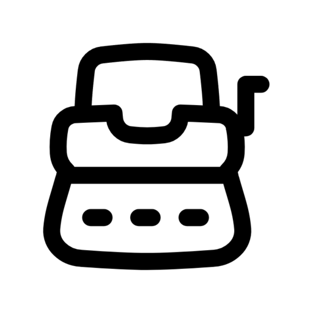

キーを打つと心地よい音が鳴る、Windows 常駐型のタイピング・サウンドアプリ。タイプライターのように打鍵音を、Enter で復帰ベルを。
Windows 11 / インストール不要・ポータブル / 管理者権限不要
打鍵ごとに打鍵音、Enter で行頭復帰のベル。打っているだけで気持ちいい。
ランタイム同梱の self-contained 版。展開してダブルクリックするだけ。フォルダごと持ち運べます。
システムトレイに静かに常駐。不要な重量級コンポーネントはビルド時に除去済み。
どのキーを押したかは扱いません。記録も送信もせず、ネットワーク通信もありません。
TypingSound.exe をダブルクリック。トレイに常駐し、すぐ鳴り始めます。.NET SDK と just は mise で宣言的に管理しています。
mise install # mise.toml に従い dotnet SDK と just を導入 just build-all # ソリューション全体をビルド just test # Core 層のユニットテスト just dist # 配布レイアウト dist/TypingSound/ を作成